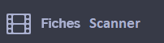

Turquie
Présentation
Merhabalar, hemşireyim. Size soracağım birkaç soruyu tercüme etmek için telefonu kullanacağım. Tamam mı?
Hemşire
Doktor
İlk yardım elemanı
Gönüllü
Resepsiyonist
Tıp öğrencisi
Ebe
Sekreter
Bakım uzmanı
Identité
Pasaportunuzu görebilir miyim?
Kimlik kartınızı görebilir miyim?
Yanınızda isminizin geçtiği herhangi bir belge var mı ?
Avrupa sağlık kartınızı görebilir miyim?
Özel sağlık sigorta kartınızı görebilir miyim?
Bakım masraflarını siz karşılıyorsunuz
Bakım masraflarını siz karşılamıyorsunuz
Hangi ülkeden geliyorsunuz?
Şu an hangi adreste oturuyorsunuz?
Size ulaşabileceğimiz bir telefon numarası alabilir miyim?
Attente
Bekleme odasında
Bekleyin lütfen
Sandalyede
Bankta
Sizi çağıracağız
Beklerken birşeyler yiyip içmek ve sigara içmek yasaktır.
Ailenizi burada bekletmek zorundayız
Sağlık durumunuza göre, doktor sizi tedavi altına alabilir, kan tahlili yaptırmak,
tomografi veya röntgen çektirmek gibi muayenelerden geçebilirsiniz. Sağlık durumunuzu ölçmek amacıyla sizi gözetim altına tutabiliriz.
Doktor izin vermediği sürece lütfen birşeyler yiyip içmeyiniz. Bazı tahlilleri yaparken aç olmalısınız
Kan tahlil sonuçları için bir saat beklemeniz gerek
Accueil
Şikayetiniz nedir?
Ağrınız var mı?
Evet
Hayır
Ağrıyan yeri görebilir miyim?
Sizi muayene edeceğim
0 ile 10 arası bir puanlama verecek olursanız, ağrınızın şiddetini ne şekilde değerlendirirsiniz?
10, dayanılmaz ağrıya verilen puanlamadır
Sıfır
Bir
Iki
Üç
Dört
Beş
Altı
Yedi
Sekiz
Dokuz
On
Sizi muayene etmem için üzerinizdekileri çıkartır misiniz?
İç çamaşırlarınızı çıkartmanıza gerek yok
Sandalyeye oturabilirsiniz
Muayene masasına uzanabilirsiniz
Sedyeye uzanabilirsiniz
Neurologie
Bayıldınız mı?
Bugün günlerden hangi gün?
Nerede olduğunuzu biliyor musunuz ?
Parmağımı gözlerinizle takip edin
El ve ayaklarınızı oynatabiliyor musunuz ?
El ve ayaklarınıza dokunacağım, elimi hissediyor musunuz ?
Gözlerime bakın, gözbebeklerinizi inceleyeceğim
Karıncalanma var mı? Nerede bana gösterir misiniz?
Ellerimi itin
Gözlerinizi açın
Ağzınızı açın
Sağ kolunuzu kaldırın
Başınız ağrıyor mu?
Ağrı :
Yavaş yavaş meydana geldi
Aniden meydana geldi
Ensenizde ağrı var mı?
Bu son aylarda seyahata çıktınız mı?
Hangi ülkeye gittiniz?
Işık sizi rahatsız ediyor mu?
Gürültü sizi rahatsız ediyor mu?
Parmağınızın ucuna iğne batırıp şekerinizi ölçeceğim
Pneumologie
Solunum fonksiyonlarınızı ölçmek için elimi karnınızın üstüne koyacağım.
Lütfen bu aşamada konuşmadan normal bir şekilde nefes alıp verin
Nefesiniz kesiliyor mu ?
Derin bir nefes alıp nefesinizi tutun
Normal bir şekilde nefes almaya devam edin
Derin bir nefes alın
Sigara kullanıyor musunuz?
Astım hastası mısınız?
Astım ilaçlarınızı aldınız mı?
Duman soludunuz mu?
Bu mendile burnunuzu silin, is var mı görelim
Cardiologie
Ağrınız
Sizi sıkıştırıyor mu?
Batıyor mu?
Yanma yapıyor mu?
Ağrınız baska bir yerinize vuruyor mu? Nereye vurduğunu bana gösterir misiniz?
Bu ağrı ne zamandan beri var?
Dakika
Saat
Gün
Nabzınızı ölçeceğim
Tırnağınıza hafif bir baskı uygulayacağım
Kan basıncınızı ölçeceğim
Çarpıntınız var mı?
Ağzınızı açıp dilinizi çıkartın. Size ilaç vereceğim
Bu ilaç ağrılarınıza iyi geliyor mu?
Alkol kullanıyor musunuz?
Şeker hastası mısınız?
Kolesterolunuz var mı?
Kalp atışlarınızı kayıt edeceğim. Ağrısızdir, lütfen birkaç saniye hareket etmeyiniz
Malaise
Fenalık geçirdiğinizi anladınız mı?
Fenalaşırken neler hissettiniz ?
Karıncalanma
Başdönmesi
Büyük bir halsizlik
Başınız dönüyor mu?
Ağrınız başka bir yere vuruyor mu? Nereye?
Bu belirtiler nerede yoğunlaştı?
Ne kadar sürdü ?
Idrar kaybettiniz mi?
Dilinizi ısırdınız mı? Ağzınızı açın
Nöbet geçirdiniz mi?
Bugün yemek yediniz mi?
Digestif
Nereniz ağrıyor, gösterir misiniz ?
Doublon
Son aylarda kilo kaybınız oldu mu? Kaç kilo kaybettiniz?
Idrara çıktığınızda yanma var mı ?
Idrarda kan var mı?
En son ne zaman aybaşı oldunuz ?
Hamile misiniz?
Bugün en son ne zaman idrara çıktınız?
Kabız mısınız?
Kaç gündür?
Mide bulantısı var mı?
İshal mısınız?
Kustunuz mu?
Büyüğünüzü yaparken kan geliyor mu?
Karında gaz var mı?
Anal muayeneden geçmeniz gerek. İzin veriyor musunuz?
Idrarınızı bu kaba yapmanız gerek
İdrarınızı kaba yapmadan önce genital bölgelerinizi temizlemeniz gerek
Infectieux
Birşey sizi soktu veya ısırdı mı?
Nereyi? Gösterir misiniz?
İlk sivilceler neredeydi, gösterir misiniz?
Bacağınız ne zamandan beri kızarık?
Kaşıntı var mı?
Sizi karantinaya almamız gerek
Bu maskeyi takmanız gerek
Korumasız cinsel ilişkide bulundunuz mu?
Ateşinizi ölçeceğim
Ophtalmologie
Bulanık görüyor musunuz?
Çift görüyor musunuz?
Baş ağrınız var mı?
Oda sanki etrafınızda dönüyormuş gibi oluyor mu?
Son zamanlarda başınıza darbe aldınız mı?
Antécédents
Diyabet, hipertansiyon gibi bir hastalığınız var mı ?
Son zamanlarda hastaneye kaldırıldınız mı?
Şu an ilaç tedavisi görüyor musunuz ? (hangi ilaç? )
İlaçlar ve reçete yanınızda mı?
Alerjiniz var mı ? Neye alerjiksiniz ?
Ailenizde bir hastalık için tedavi gören biri var mı?
Pédiatrie
Bebekte kilo kaybı var mı? Kaç kilo?
Bebeğin bütün aşıları tamam mı?
Kardeşleri hasta mı?
İştahı yerinde mi?
Kustu mu?
Sizce normalinden daha mı hareketli ?
Sizce normalinden daha mı halsiz?
İshal mı?
Gynécologie
Hamile misiniz?
Kaç haftalık?
Aybaşı oldunuz mu?
Kan kaybınız oldu mu?
Kanama daha çok kırmızı mı yoksa siyah renkte mi?
Önceki hamileliklerinizde sorun yaşadınız mı?
Kasılma var mı?
Su boşalması oldu mu?
Bebek hareket ediyor mu?
Doğum kontrol hapı kullanıyor musunuz?
Sizi jinekolojik muayeneden geçirmem gerekiyor. Lütfen muayene masasına uzanınız.
İç çamaşırlarınızı çıkarınız
Traumatologie
Araçtan dışarıya doğru sürüklendiniz mi?
Aracı kaç km hızla kullanıyordunuz?
Koruyucu kask takıyor muydunuz?
Emniyet kemeriniz bağlımıydı?
Düştünüz mü?
Ne kadar yükseklikten?
Kanı sulandıran ilaçlar kullanıyor musunuz?
Omurgalarınızı korumak için size boyunluk takacağım
Yaraya antiseptik ilaç sürmem gerekiyor
Yaraya dikiş atmam gerekiyor
Yarayı sarmam gerekiyor
Yaraya yakın yerleri narkozla uyuşturacağım
Hareket etmeyin
Orayı alçıya almam gerek
Ameliyat olmalısınız
Examens
Sizde şu olmalı
Size şunu yapacağım
Seruma bağlayacağım
Kan tahlili yapacağım
Pansuman yapacağım
İğne yapacağım
Sizi temizleyeceğim
Tomografi çekeceğim
Röntgen çekeceğim
Alçıya alacağım
Ultrason çekeceğim
Ameliyat edeceğim
Bugün
Yarın
Ameliyattan önce şampuanla yıkanmanız gerek
Muayene ağrısızdır
Ameliyattan sonra, üstünüzde bunlar olacak :
Foley (sidik torbası)
Mide tüpü
Göğüs tüpü
Ameliyat izi
Ne kadar mücevher ve piercing varsa hepsini çıkartmalısınız
Ojelerinizi çıkartmalısınız
Dişliğinizi, diş tellerinizi ve kulak cihanızı çıkartmalısınız
Şu sorulara cevap verebilir misiniz?
kalp pilinizi var mı?
Kalp kapakçığı
Stent
Protez
Kafa içi klipleri
Koklear implant
Göz implantı
Vücutta metal
Şok cihazı (defibrilatör)
Kateter portu
Emziriyor musunuz?
Oturabiliyor musunuz?
Kalkabiliyor musunuz?
Yürüyebiliyor musunuz?
Traitements et consignes
Size şunları veriyorum
İlaçlar
Ağrı kesiciler
Antibiyotik
Su içmek yasak
Yemek yasak
Kalkmak yasak
Sırtüstü uzanmalısınız
Sigara içmek yasak
Bizi çağırmak için buraya basın
Işıkları açıp kapatmak için buraya basın
Tuvaletler burada
Banyo burada
Odanız burada
Conclusion
Kırık var
Kırık yok
Ameliyat olmalısınız
Yarın sabah tekrar gelmelisiniz
Şu tarihte tekrar gelmelisiniz
Dikişleri şu tarihte aldırmalısınız
Alçıya almalısınız
Atel (dizlik, bileklik vs.) takmalısınız
Evinize dönebilirsiniz
Hastaneye gitmelisiniz
Hastanede kalmalısınız
Başka bir servise nakledileceksiniz